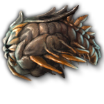
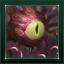
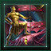

Prethoryn Scourge
Version
This article is for the PC version of Stellaris only.
The Prethoryn Scourge is one of the endgame crises. It is a swarm of hive-minded alien locusts from beyond the galaxy, arriving for the purpose of devouring all life.
The crisis begins with a notice about subspace echoes beyond the galaxy that are approaching. Immediately a Situation Log notice called "The Coming Storm" is added. In roughly 50 months, they will be close enough to get the general direction of the swarm. A system at the edge of the galaxy will be marked as the center of the Invasion. The system cannot be within or near a Fallen or Awakened Empire. The closest 4 systems are marked for the vanguard fleets. 10 months later, a transmission will be received from the swarm.
30 months later, the Vanguard will arrive with 4 construction ships and 8-20 fleets depending on game difficulty. At this point the Prethoryn Scourge appears in the contact log but cannot be communicated with. If an empire has  Hive Mind authority, a
Hive Mind authority, a  Psionic founder species or reached the final level of the
Psionic founder species or reached the final level of the  Behemoth Fury crisis it will be able to communicate with the crisis but diplomacy remains impossible.
Behemoth Fury crisis it will be able to communicate with the crisis but diplomacy remains impossible.
200–600 days after the vanguard, the main invasion fleet will arrive at the center system. In each vanguard system 3 Transport Fleets and one construction ship will spawn as well as 2-5 Star Brood fleets depending on game difficulty.
As the Prethoryn Scourge infests more of the galaxy, soft chewing sounds will start to be heard in the background.
Mechanics
The Prethoryn Scourge uses the following mechanics:
- The Prethoryn species itself is immortal so their Commanders will never die of old age.
- Every year, the Prethoryn Scourge gains the following ships:
- If they have fewer than 4 Infestors, they get 5 Infestors
- If they have fewer than 4 Constructors, they get 3 Constructors
- If they have fewer than 140 armies, they get 20 armies
- (every 2 years) If they have fewer than 2000 ships and at least 1
 Infested World, they get 1-3 Star Brood fleets depending on game difficulty. The number is increased by 1 if they control at least 20% of the galaxy and by 2 if they control at least 40% of the galaxy.
Infested World, they get 1-3 Star Brood fleets depending on game difficulty. The number is increased by 1 if they control at least 20% of the galaxy and by 2 if they control at least 40% of the galaxy.
- The Prethoryn Scourge will attack planets that contain biological pops first.
- Each fleet will take systems in a way similar to Total Wars.
- The Prethoryn Scourge use Infestors as colony ships. They will land on uncolonized habitable planets and when the colony development process is complete, the planet is turned into an Infested World. As with regular colony development, any orbital bombardment will instantly interrupt the process.
- Prethoryn transports will invade inhabited worlds. If they occupy the world, they will begin to purge the pops. If the world is not reclaimed before all pops are killed, it will turn into an Infested World.
- Infested Planets cannot be invaded. In order to get rid of the infestation, infested planets must be bombarded until
 Devastation reaches 100%, at which point they will turn into a
Devastation reaches 100%, at which point they will turn into a  Barren World with the
Barren World with the 
 Terraforming Candidate modifier.
Terraforming Candidate modifier. - If the Scourge overruns a habitable megastructure, it will destroy it and it cannot be rebuilt.
Prethoryn fleets
Vanguard fleets consist of 31 Swarmlings led by a commander with the 
 Void Hunter trait. Star Brood fleets consist of 1 Queen, 8 Brood Mothers, 10 Warriors, and 35 Swarmlings led by a commander that has a 25% chance to have the
Void Hunter trait. Star Brood fleets consist of 1 Queen, 8 Brood Mothers, 10 Warriors, and 35 Swarmlings led by a commander that has a 25% chance to have the 
 Hive Affinity trait.
Hive Affinity trait.
Prethoryn Ships have natural armor despite not using armor components. The stats of their weapons are determined by the Crisis Strength setting. Analyzing their debris allows the  Scourge Missiles and
Scourge Missiles and  Swarm Spawning Pools technologies to be reverse-engineered. Their bio-drives and thrusters are identical to tier 1 drives and thrusters while their bio sensors are identical to tier 2 sensors.
Swarm Spawning Pools technologies to be reverse-engineered. Their bio-drives and thrusters are identical to tier 1 drives and thrusters while their bio sensors are identical to tier 2 sensors.
| Swarmling | Warrior | Brood Mother | Queen | Starbase |
|---|---|---|---|---|
|
|
|
|
|
Sentinel Order

{kind=link}
{kind=link}
{kind=link}
If the Prethoryn Scourge controls either 15% of the galaxy or 90 systems, the Sentinel Order will spawn. If a Fallen or Awakened Empire is present, it will spawn next to its borders, otherwise it will spawn next to the borders of a random empire. A new black hole system will be spawned for them and they have Fallen Empire level tech, although their fleets will lack strength from repeatable technologies. Every few years, the Sentinels will create a fleet as long as they have below 200 ships. Sentinel fleets use the ship appearance of all species archetypes except DLC ones and use top-tier components. Their initial fleet also includes a Fallen Empire titan. Sentinel commanders have the 
 Sentinel Training trait.
Sentinel Training trait.
If the Prethoryn Scourge controls at least 50% of the galaxy, the Sentinels will make a breakthrough in swarm anatomy, giving every empire the Sentinel Data permanent empire modifier.
Every few years, as long as the Sentinels have more than 30 ships, they will offer a one time donation of ships to an empire that destroyed at least 7 Prethoryn fleets and did not attack the Sentinels. Those fleets do not use  Naval Capacity and cannot be upgraded. Each fleets consist of the following:
Naval Capacity and cannot be upgraded. Each fleets consist of the following:
| 1 battlecruiser | 1 battleship | 1 cruiser | 4 escorts | 4 destroyers | 8 corvettes | |
|---|---|---|---|---|---|---|
| Weapons |
|
|
|
|
|
|
| Utility |
|
|
|
| ||
| Core |
|
{kind=link}
{kind=link}
{kind=link}
{kind=link}
{kind=link}
The sentinels do not expand. A few weeks after the Prethoryn Scourge has been defeated they will disband.
Captured Queens
There are two queens who can be captured. The first is the 
{kind=link}
The second is an incapacitated queen that can appear in a random system inside Prethoryn space, if the Prethoryn Scourge is not defeated within a number of decades. A special project will become available there to every empire to tame the queen, and the first empire that completes it will gain the domesticated queen as a fleet led by an unchangeable level 8 Fleet Consciousness Commander. Roughly every two months, the queen has a 33% chance to add a Warrior to the fleet and a 66% chance to add a Swarmling to the fleet, until the fleet has 30 ships. In addition, roughly 100 years later, if the queen is still alive and the founder species is  Psionic, the queen will reveal that the galaxy the Prethoryn species came from has been extinguished or eclipsed by something and the empire will gain 1000-5000 monthly
Psionic, the queen will reveal that the galaxy the Prethoryn species came from has been extinguished or eclipsed by something and the empire will gain 1000-5000 monthly  Physics research.
Physics research.
Obtaining either Queen will award the 
Feral Prethoryn
For 15 years after the Prethoryn Scourge has been defeated, every year there is a 10% chance that, on a system with a previously infested planet, a Feral Prethoryn starbase protected by 3 fleets of 40 Swarmlings will appear. They will not expand but fleets of 20 Swarmlings may roam the surrounding systems and fight other Feral Prethoryn swarms.
Successfully repelling the Prethoryn Swarm
Prethoryn Swarm entities are heavily armored, attack enemies with missiles and strike craft, along with some acid bursts. Swarmlings possess Corvette-level evasion.
Since all their weapons either ignore or cause major damage to shields, and work equally well against armor and hull, combat fleets should protect themselves with point defense, strikecraft, and armor. Use energy weapons that deal bonus damage against both armor and hull to attack. Arc Emitters work well too; if you build Arc Emitter battleships, hangars will naturally be a good support weapon for them.
Empires which lack the means to directly counter the Scourge’s fleets should immediately focus on containing its expansion instead. Keeping multiple small fleets of corvettes or destroyers to hunt down their civilian ships and stopping infestations is a viable strategy to limit the spread of the Scourge, as they will send otherwise engage fleets to try and stop your efforts. Do note that smaller ships will be highly vulnerable to Swarm Strikers if caught in a direct fight.
If an important planet falls to a Prethoryn invasion, it will take much longer for them to infest it compared to uninhabited planets, as purging takes much longer than infestation. Infested planets are immediately turned into barren planets once they take enough planet damage. Since the Swarm only can infest habitable worlds, it is possible to starve them by cornering them and launching surgical strikes toward their planets to render them uninhabitable, thus widening the gap between them and any infestable territory. The Prethoryn will pull any fleets from surrounding systems to defend their planets, so fleets targeting Prethoryn planets must be prepared to face multiple swarm fleets if those have not been dealt with already. AI Empires in particular will use such hit-and-run tactics against infested planets.
Another feasible strategy is to get a Colossus into the area where the Crisis will spawn and breaking all of the planets to starve them. Putting your best fleets near the edge of the invasion zone is also helpful, stationing them at the ending for any wormholes leading out of the invasion zone is a must.
Prethoryn "Star Brood" fleets are composed of at least one Queen, escorted by Warrior and Brood Mother battleship equivalents, with Spawnling corvettes making up the bulk of the fleet combat strength. A fleet equipped with long-range weapons can expect to destroy a number of Spawnlings before the Prethoryn units are able to return fire, at which point emergency FTL can be used to avoid casualties altogether. By repairing and repeating, this guerrilla tactic can wear down Prethoryn fleets until they are small enough to defeat in a full confrontation.
Salvage should not be forgotten as it unlocks their missiles. Their starbases are equally good sources of technology while being much easier targets.
Defeating the Scouge while using a biological shipset awards the 
|
|
Available only with the Nomads DLC enabled. |
The Prethoryn Scourge has no defenses against Stellar Cannon shots, but the fact they spawn in multiple systems over multiple waves makes using the Cannon against them inconsistent. Using cheap ships like blank designs or transport ships to tie their fleets in place can allow the Stellar Cannon to deal damage without the chance of a miss, which can be used to deal with at least one of their fronts. Stellar Cannons do not deal enough  Devastation to destroy
Devastation to destroy  Infested Worlds, but a fully upgraded Stellar Cannon can still shoot at one to inflict half of the damage needed and allow normal fleets to destroy them quicker.
Infested Worlds, but a fully upgraded Stellar Cannon can still shoot at one to inflict half of the damage needed and allow normal fleets to destroy them quicker.
References
| Exploration | Exploration • FTL • Unique systems • L-Cluster • Pre-FTL species • Fallen empire • Spaceborne aliens • Enclaves • Guardians • Marauders • Caravaneers |
| Celestial bodies | Celestial body • Colonization • Planetary features • Planet modifiers |
| Discovery | Discovery • Anomaly • Archaeological site • Astral rift • Relics • Collection |
| Species | Species • Pop modification • Biological traits • Machine traits • Population • Species rights • Ethics |
| Leaders | Leader • Common leader traits • Commander traits • Official traits • Scientist traits • Paragons |
| Governance | Empire • Origin • Government • Civics • Council • Policies • Edicts • Factions • Traditions • Ascension perks • Ambition • Situations |
| Economy | Resources • Planetary management • Districts • Jobs • Designation • Trade • Megastructures • Waystation |
| Buildings | Planet capital • Common buildings • Planet unique • Empire unique • Holdings |
| Ships | Ship • Arkship • Ship designer • Core components • Weapon components • Utility components • Mutations • Offensive mutations |
| Technology | Technology • Physics research • Society research • Engineering research |
| Diplomacy | Diplomacy • Relations • Galactic community • Federations • Subject empires • Intelligence • Contracts • AI personalities |
| Warfare | Warfare • Space warfare • Land warfare • Starbase • Crisis |
| Others | Events • The Shroud • Preset empires • AI players • Stat modifiers • Console commands • Easter eggs |